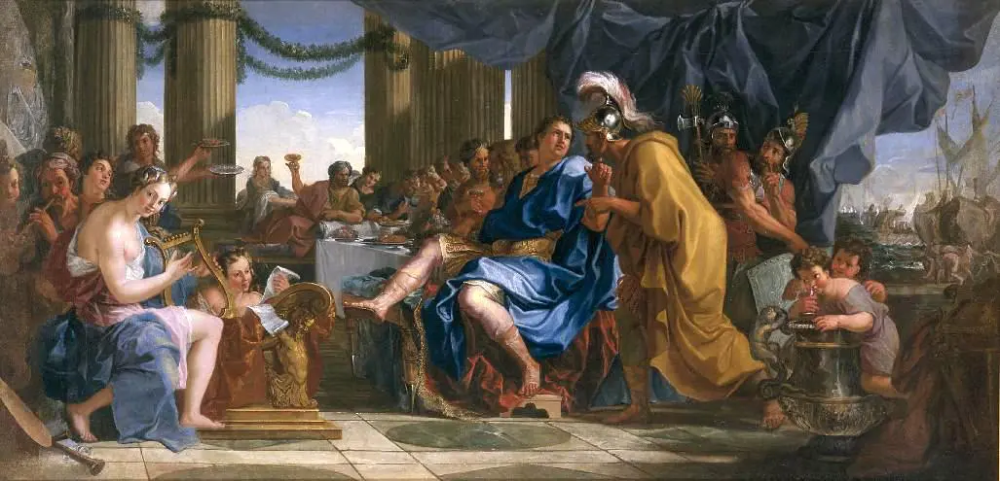
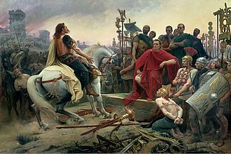
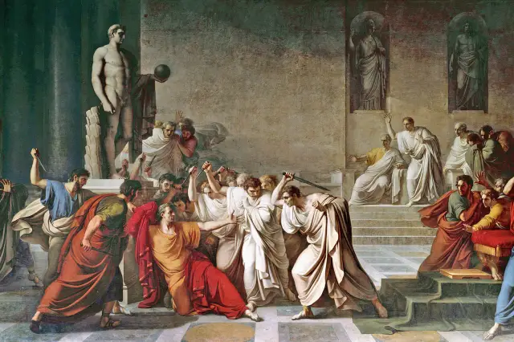

Julius Caeser

The birth of Caeser
Julius Caesar was born in Rome on 12 or 13 July 100 BC into the prestigious Julian clan. His family were closely connected with the Marian faction in Roman politics. Caesar himself progressed within the Roman political system, becoming ins uccession quaestor (69), aedile (65) and praetor (62).
Early Life
His youth was marked by political turmoil and his family's association with the populist politician Gaius Marius, which put him at odds with the powerful dictator Sulla. After his father's death when he was 16, he married Cornelia and later served in the military, escaping Sulla's persecution before beginning his rise through the Roman political system.
Rise to Power
Julius Caesar rose to power by first forming a political alliance, the First Triumvirate, with Pompey and Crassus, then conquering Gaul to gain immense wealth and military support. He then defied the Senate by crossing the Rubicon, sparking a civil war that he won. After defeating Pompey, Caesar became dictator, centralizing power and reforming Roman society, paving the way for the Roman Empire.
Roman Reign
Julius Caesar was never an emperor and did not reign in the traditional sense, but rather ruled as a powerful dictator from 46 BC until his assassination in 44 BC, a period of just a few years that profoundly influenced the Roman Republic's transformation into the Roman Empire. His rule involved a series of sweeping political and social reforms and his actions paved the way for his adopted heir, Augustus, to become the first Roman Emperor.
The Death of Caeser
Julius Caesar, the Roman dictator, was assassinated on the Ides of March (15 March) 44 BC by a group of senators during a Senate session at the Curia of Pompey, located within the Theatre of Pompey in Rome. The conspirators, numbering between 60 and 70 individuals and led by Marcus Junius Brutus, Gaius Cassius Longinus, and Decimus Junius Brutus Albinus, stabbed Caesar approximately 23 times.
